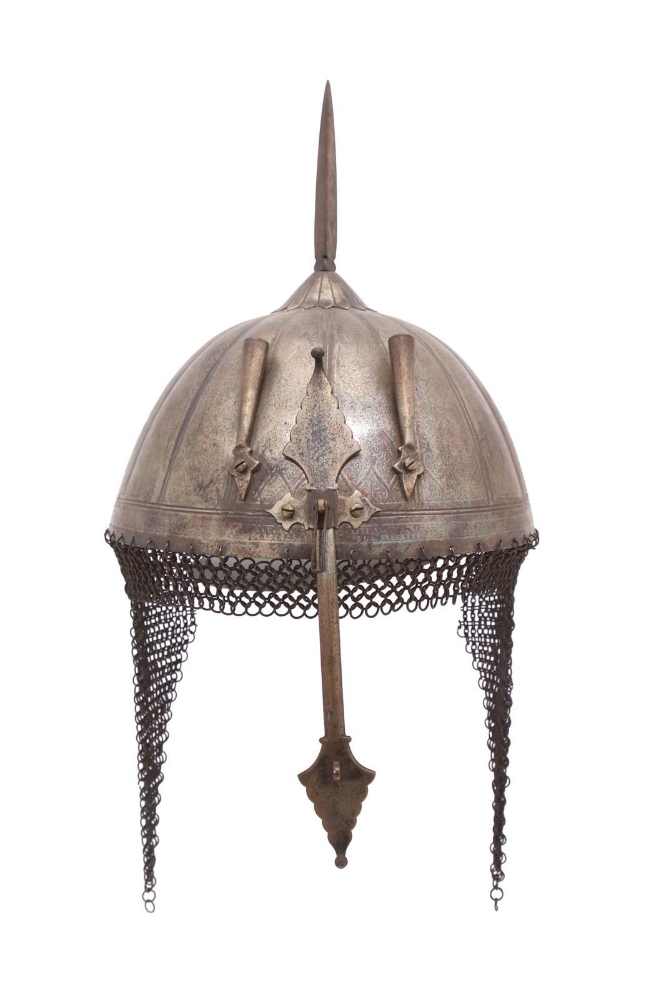

Muncimir

Bitwa pod Grunwaldem – Triumf Polsko-Litewski
Jedna z największych bitew średniowiecznej Europy, która zmieniła bieg historii...
Jedna z największych bitew średniowiecznej Europy, która zmieniła bieg historii...